有向距离场的构建与应用
本文是博主在实习公司制作的课程讲义，内容是有向距离场（SDF）的构建与应用。
原课程对应的幻灯片可以点击这里下载。
SDF 技术概述
SDF：定义
有向距离场（Signed Distance Field, SDF）\(\varphi(\mathbf{x}):\mathbb{R}^{3} \rightarrow \mathbb{R}\) 针对空间中的位置 \(\mathbf{x}\) 输出其到某个物体表面的最短距离。若该位置在物体内部，则输出距离为负，否则距离为正。
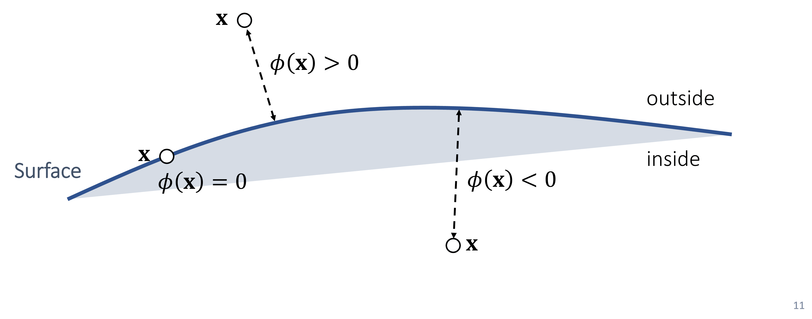
\(\varphi(\mathbf{x})\) 的梯度 \(\nabla\varphi(\mathbf{x})\) 的方向给出了最快朝外远离物体表面的方向，可用在模型表面近似法线方向。
解析的 SDF
解析的 SDF 是一种隐式表达，许多基础几何形体都可以用解析的 SDF 表达。比如球体、立方体、圆柱体、三角形等1。
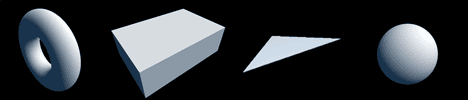
- 中心为 \(\mathbf{c}\)，半径为 \(r\) 的球体：\(\varphi(\mathbf{x}) = |\mathbf{x} - \mathbf{c}| - r\)
- 中心为 \(\mathbf{c}\)，长宽高为 \(\mathbf{b}\) 的立方体：\(\varphi(\mathbf{x}) = \|\max(|\mathbf{x}| - \mathbf{b},\mathbf{0})\| + \min(\max(|x_{1}| - b_{1},|x_{2}| - b_{2},|x_{3}| - b_{3}),0)\)
- ......
进一步地，可以方便地对 SDF 基础几何形体做布尔运算，如并集、交集、差集，得到更复杂的几何形体，这就是基于 SDF 的建模，是一种程序化建模方法。它是许多 Shadertoy 魔法的基本原理。
SDF 三维纹理
然而，传统建模流程得到的三角网格体无法用解析的 SDF 表达，因此游戏引擎需要维护一个离散的三维纹理存储其 SDF，这是一种显式表达。该三维纹理的每个 texel，称之为采样点，即存储此位置的 SDF。
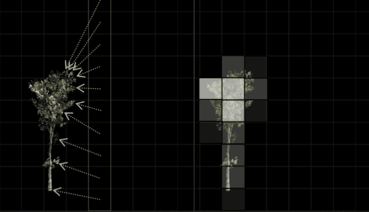
SDF 的生成算法
距离场的生成
导入三角网格模型并确定其包围盒后，即可进行距离场（DF）的生成。
设三维轴 \((x,y,z)\) 上每个轴的采样点数分别为 \(a,b,c\)，模型的三角形数为 \(m\)。对每个采样点，我们需要：
- 遍历当前模型的所有三角形，求该采样点距离三角形的最短距离。
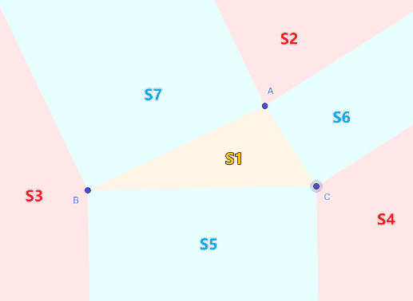
朴素做法时间复杂度为 \(O(abcm)\)。
并行优化
若事先对三角形建立 BVH，则每个采样点查找其 DF 值时不再需要遍历所有三角形，生成 mesh DF 的整体时间复杂度将优化到 \(O\left( abc\log m \right)\)。
引擎采用 Intel Embree 库在 CPU 上对三角形建立 BVH，并对所有采样点并行生成 DF，并行线程数为 \(abc\)。由于该任务需要频繁访存，因此 GPU 计算着色器表现不佳，计算均在 CPU 上并行处理。
1 | std::for_each( |
符号信息的生成
由于生成的 DF 是无符号的，因此还需要判断采样点位于 mesh 内部还是外部，生成 SDF。由于许多三维模型不密封，因此设计一个绝对正确的内外部判断算法会存在一些困难。
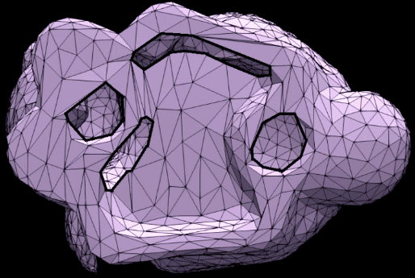
不过，内外部判断的算法设计还是比较丰富的。这里将介绍两个常用算法：随机投射算法和最近三角面算法。其他的诸如 JFA 算法，通常更精确，但计算量更大，不再赘述。
随机投射算法，就是在采样点随机发射多个射线与 mesh 求交，根据法线方向判断交点位于 mesh 内部还是外部。若交点在 mesh 的内部多，则采样点位于 mesh 内部，否则位于外部。该算法较常用且准确，引擎默认使用该算法计算符号。
引擎还可以使用一个计算量很低，但效果还不错的最近三角面算法：
- 根据距采样点最近的三角形面片的法线方向：
- 若采样点位于该法线方向指向的半空间，则采样点在 mesh 外部
- 否则，在 mesh 内部。
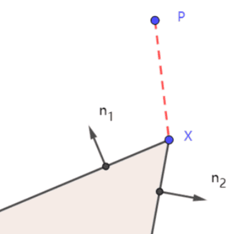
尽管该算法可能会在一些几何体的高频凹凸区域给出错误的结果，但也基本不会造成可以察觉的问题，可作为备选。
SDF 的压缩算法
多级纹理
与所有纹理类似，SDF 也可以具有纹理层级 mipmap，以方便后续的优化。细粒度的纹理层级的分辨率较高，粗粒度的分辨率较低。
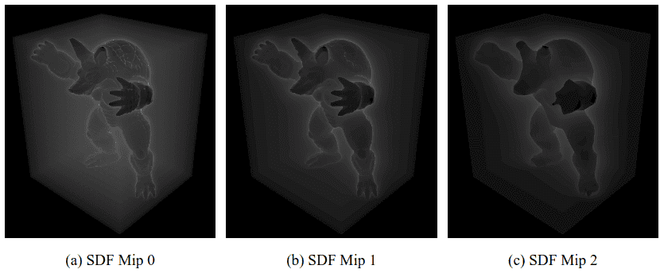
由于距离场数据的特殊性，插值可能产生错误的结果，因此不能简单地调用图形 API 的普通三维纹理的 mipmap 生成接口。实践时，需要手动以不同的采样密度多次生成纹理。
纹理基本单元与条带阈值压缩
为保持空间局部性，引擎将 \(k \times k \times k\) 个采样点作为管理的基本单元，称为一个采样块2。综合考虑内存对齐，当前取值为 \(k = 8\)。查询 SDF 时，我们首先确定查询位置位于哪个采样块，然后在块内插值结果。
由于我们通常只关心模型表面的 SDF 信息，为尽可能只存储有价值的数据，需要对过大的 SDF 值进行阈值压缩处理。具体地：
- 选定一个阈值 \(r\)，如果一个采样点的 DF 值 \(|d| > r\)，则该采样点的 \(d\) 将被 clamp 到 \(\pm r\)。
- 如果一个采样块中，所有采样点均满足 \(|d| > r\)，则该采样块将被丢弃。
\(r\) 可称为 条带半径参数，它是一个与
- mesh 的 bounding box 的大小，
- mesh 的 SDF 分辨率，
- 允许 SDF 距离场在 mesh 表面附近的有效覆盖范围（以采样点为单位）
均有关的阈值。具体而言，前两者增大时，\(r\) 减小；第三者（"半径"）增大时，\(r\) 增大。条带增大将导致存储的 SDF 从稀疏变得密集，导致存储压力增加。
条带阈值压缩与偏移访问
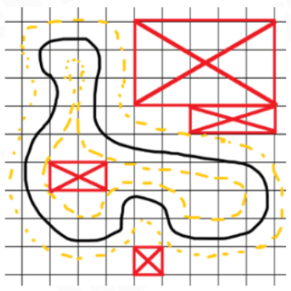
由于我们丢弃了包围盒中部分的采样块，我们需要一个哈希表来确定各个采样块在包围盒中的位置。
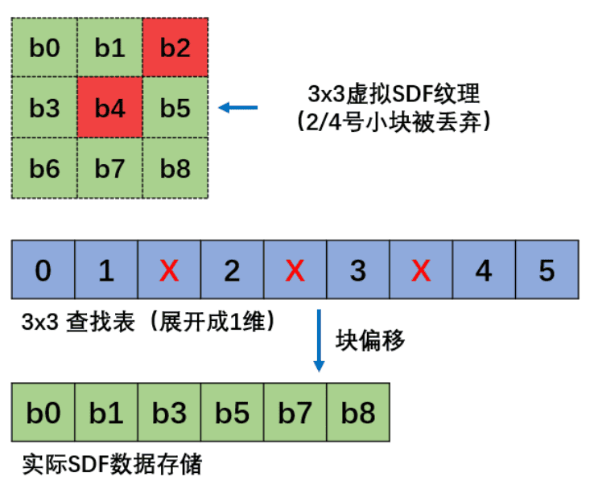
在显存中，我们仍将所有未被丢弃的采样块线性存储，但需要一个额外的"偏移值"，在实际访问块时，需要查询
索引 - 偏移值 访问到相应的块。
线性量化距离
由于我们存储的 SDF
最大距离由阈值约束，所以可以不直接存储浮点数，而将距离存储到
uint8_t
量化的数据内，节约内存的同时保持一定的精度。原始距离的绝对值的最大值为
\(r\)，以此决定量化数据的范围。
具体地，若计算得到的原始距离值为 \(d\)，uint8_t 量化后的结果为
\(s\)，那么
\[ d = \frac{s}{255} \cdot \text{scale} + \text{bias}, \]
其中 \(\text{scale} = 2r,\text{bias} = - r\)。这样一来：
- 当 \(d = - r\) 时，\(s = 0\)
- 当 \(d = r\) 时，\(s = 255\)
因此有效的 \(d\) 的取值范围为 \(\lbrack - r,r\rbrack\)。
SDF 的使用与查询
GPU 上的 SDF
我们在 CPU 上完成 SDF 的生成和压缩后，需要将数据拷贝到 GPU 上使用，以帮助应用程序完成 shader 上的 ray marching 和碰撞检测等任务。
1 | // nonstd::unique_ptr<Texture> sdf_atlas; |
我们在 OpenGL 中用 sampler3D 存储 SDF，采样坐标空间为
\((0,1)^{3}\)，因此需要将纹理采样坐标归一化。
若场景有新模型需要生成 SDF，GPU 上的 SDF 纹理也将得到更新。
SDF 的实例化
如果加入了原先模型的一个实例，则我们不需要重新建立 SDF，可以复用原模型的 SDF 数据。不过，如果模型发生了平移、旋转或缩放变换，SDF 也需要相应地变换。因此，我们需要在 SDF 中存储模型的变换信息。
因此，引擎将记录 \((0,1)^{3}\) 归一化体积空间（volume space）到原始模型空间的变换：
1 | volume_to_local = Affine{ |
这将用于后续模型发生平移、旋转或均匀缩放变换时，对应 SDF 的变换。请注意：发生非均匀缩放变换时，尽管 SDF 仍可以使用，但其中数据将变得不准确。
SDF 纹理绑定在 imported mesh 上，以实现 SDF 的实例化：不同 mesh instance 将引用相同的 SDF 纹理，但可以具有不同的变换。
距离查询
输入：世界坐标 \(\mathbf{p}\)，要获取该处的 SDF 值，引擎将执行如下流程：
- 对每个模型 \(m_{i}\) 的 mesh SDF：
- 若 \(\mathbf{p}\) 在 \(m_{i}\) 的包围盒之内：
- 获取 mesh SDF 世界空间到其 volume 空间的变换 \(\mathbf{M}_{i,\text{ world} \rightarrow \text{volume}}\)。该变换与模型 \(m_{i}\) 此时的变换有关，也与建立 SDF 时模型的变换有关。
- 查询纹理
sample_mesh_sdf(\(i,\mathbf{M}_{i,\text{ world} \rightarrow \text{volume}}\mathbf{p}\), mip_level)，输出 SDF 的值。具体地：- 若 \(\mathbf{p}\) 在被存储的采样块之内，则获取 \(\mathbf{p}\) 所在的采样块，三线性插值附近的采样点获取 SDF 的值
- 若 \(\mathbf{p}\) 不在被存储的采样块之内，则：取 \(d = \pm r\) 作为 SDF 的近似值，或者用水平集算法获取 SDF 的值
- 若 \(\mathbf{p}\) 不在 \(m_{i}\) 的包围盒之内：
- 取 \(\mathbf{p}\) 与 \(m_{i}\) 的包围盒的距离，作为 SDF 的近似值，或者用水平集算法获取 SDF 的值
- 若 \(\mathbf{p}\) 在 \(m_{i}\) 的包围盒之内：
如果 \(\mathbf{p}\) 不在任何模型的内部，则可以获取每个 SDF 查询结果的最小值，作为该位置最终 SDF 值 \(\varphi(\mathbf{p})\)。
梯度查询
梯度查询的流程是类似的，这里介绍一下引擎对
sample_mesh_sdf_gradient(\(i,\mathbf{M}_{i,\text{ world} \rightarrow
\text{volume}}\mathbf{p}\), mip_level) 的实现。
为了计算 \(\mathbf{p}\) 处的 SDF 梯度，简单的想法是中心差分法，即查询目标点所在位置六个方向上偏移 \(h\) 的 SDF 值，用离散差分近似梯度。首先是单方向差分：
\[ \frac{\partial\varphi(\mathbf{p})}{\partial x} \approx \frac{\varphi(\mathbf{p}{+ (h,0,0)}^{T}) - \varphi(\mathbf{p})}{h}, \]
\[ \frac{\partial\varphi(\mathbf{p})}{\partial x} \approx \frac{\varphi(\mathbf{p}) - \varphi(\mathbf{p}{- (h,0,0)}^{T})}{h} \]
复合得到轴向差分：
\[ \frac{\partial\varphi(\mathbf{p})}{\partial x} \approx \frac{\varphi(\mathbf{p}{+ (h,0,0)}^{T}) - \varphi(\mathbf{p}{- (h,0,0)}^{T})}{2h} \]
于是
\[ \begin{aligned} \nabla\varphi(\mathbf{p}) & = \left( \frac{\partial\varphi(\mathbf{p})}{\partial x},\frac{\partial\varphi(\mathbf{p})}{\partial y},\frac{\partial\varphi(\mathbf{p})}{\partial z} \right)^{T} \\ & = \text{ normalize}\left( \varphi(\mathbf{p} + h\mathrm{\mathbf{i}}) - \varphi(\mathbf{p} - h\mathrm{\mathbf{i}}),\varphi(\mathbf{p} + h\mathrm{\mathbf{j}}) - \varphi(\mathbf{p} - h\mathrm{\mathbf{j}}),\varphi(\mathbf{p} + h\mathrm{\mathbf{k}}) - \varphi(\mathbf{p} - h\mathrm{\mathbf{k}}) \right) \end{aligned} \]
该方法需要查询 6 次 SDF。
引擎使用一种基于四面体方向改进的方法3，在假设 \(\varphi(\mathbf{p}) \approx 0\) 时，只需查询 4 次 SDF：
\[ \nabla\varphi(\mathbf{p}) = \text{ normalize}\left( \sum_{i = 1}^{4}\varphi(\mathbf{p} + h\mathbf{k}_{i})\mathbf{k}_{i} \right) \]
其中 \(\mathbf{k}_{0} = (1, - 1, - 1)^{T},\mathbf{k}_{1} = ( - 1, - 1,1)^{T},\mathbf{k}_{2} = ( - 1,1, - 1)^{T},\mathbf{k}_{3} = (1,1,1)^{T}\)。由于 SDF 碰撞检测算法通常只在模型边缘发挥作用，且我们建立的 SDF 条带半径由 \(r\) 决定，\(r\) 通常是一个小值，因此 \(\varphi(\mathbf{p}) \approx 0\) 一般成立，故可以使用该算法。
SDF 的可视化
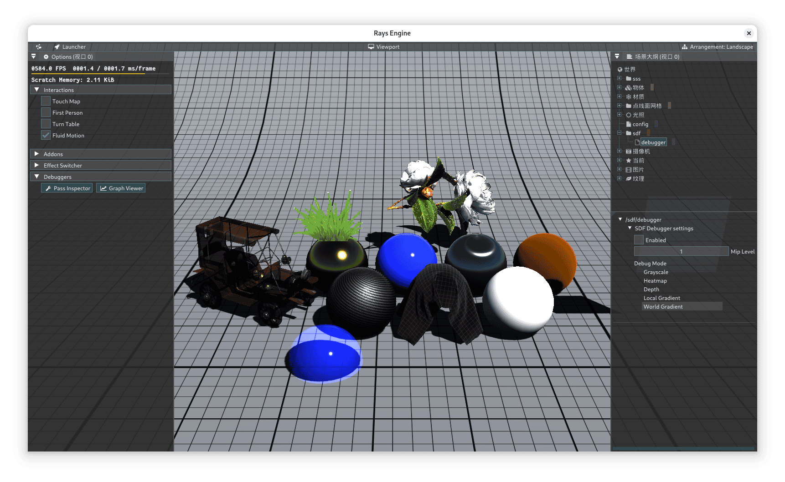
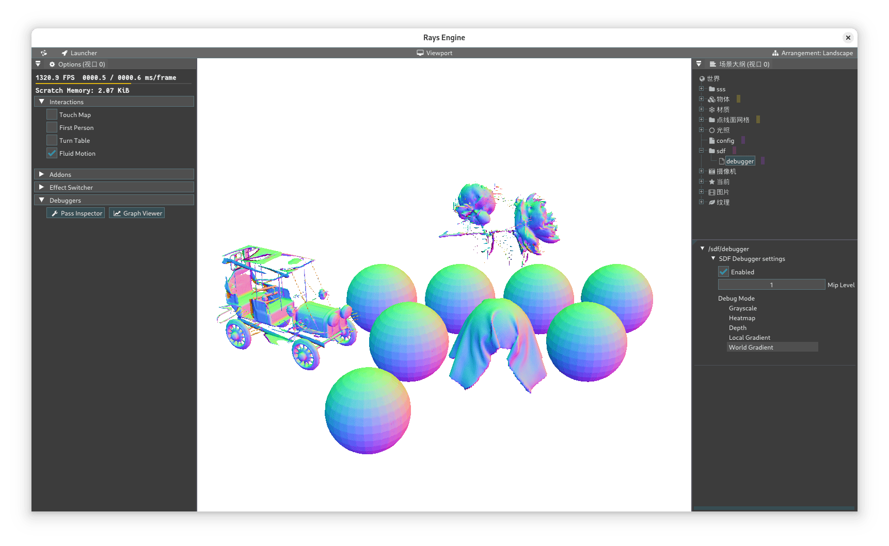
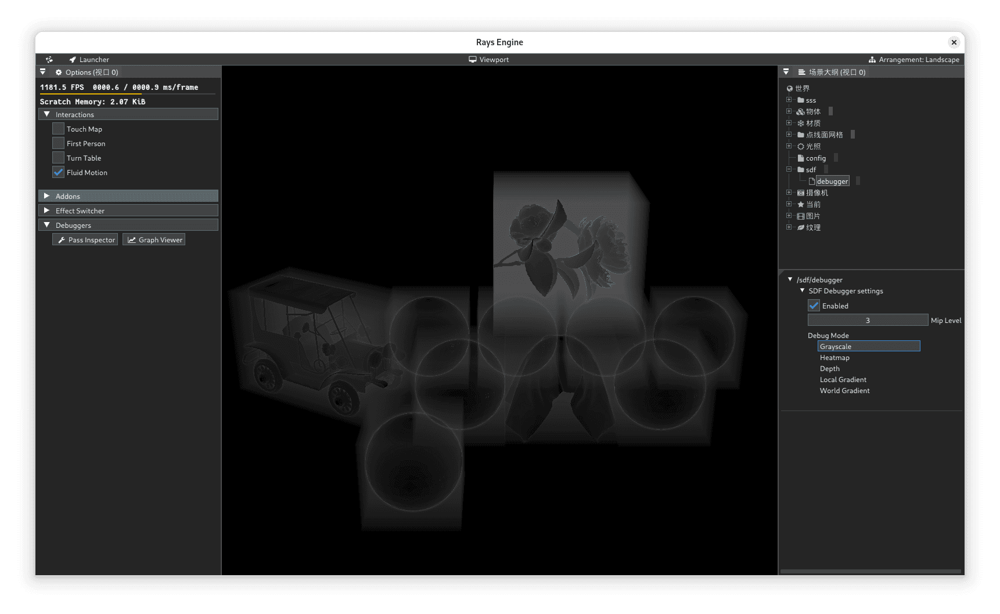
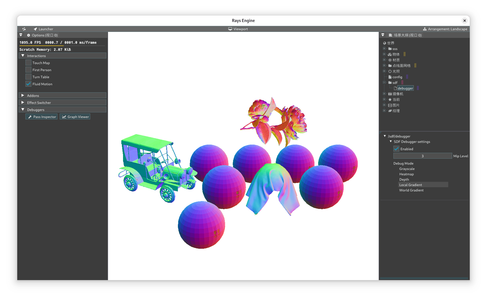
我们效仿 UE4，利用 ray marching (sphere tracing) 进行可视化：从摄像机出发向场景发射光线，做 sphere tracing：从起点开始，不断采样射线上的 SDF 值 \(d\)，并用 \(\max(|d|,\varepsilon)\) 步进光线，其中 \(\varepsilon\) 是一个较小的正值。
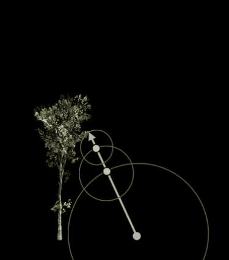
最终，我们根据 sphere trace 的次数累积该像素的亮度。可见，trace 次数越多，该像素就越亮，因此可以在模型边缘观察到高亮度，而在距离边缘有一定距离的模型内部和外部观察到低亮度。在 Bounding box 之外，由于无法查询 SDF 的值，因此不会有任何亮度。
SDF 的应用
Ray Marching 的加速
SDF 与实时渲染紧密结合，就在于它是一个非常适合用于加速 ray marching 的数据结构，可用于实现大量全局光照算法，因此成为了 UE5 Lumen 最重要的基础设施之一。
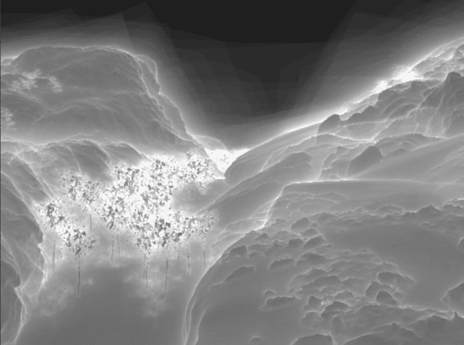
SDF 阴影
SDF 阴影是一个与 shadow mapping 不同的阴影技术，实际技术原理是基于 ray marching 的 occlusion 计算。但由于 SDF 能够加速 ray marching 过程，因此工业界往往误导性地将其称为"SDF 阴影"。
尽管并不十分物理，但这是一个能够产生软阴影的技术，且支持艺术家调整阴影的"柔软程度"，同时性能消耗小于光线追踪阴影，因此在实时渲染领域具有一定的应用价值。
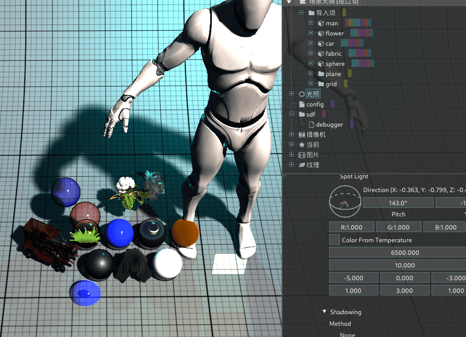
如图所示，理想点光源只能产生硬阴影。然而对自然界中占绝大多数的体积光源而言，阴影部位可分为无阴影、半影和全影部分。
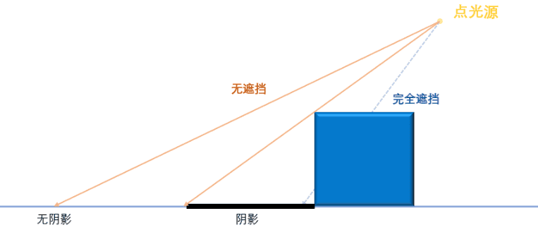
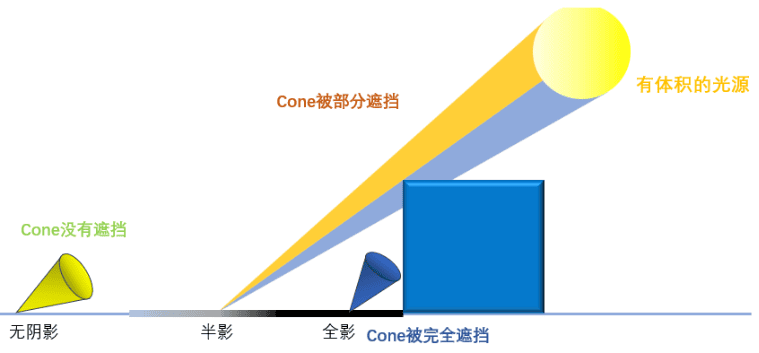
为了确定当前片元是否能被自然光源照亮，照亮的程度有多高，可以想到一个直接的方法：作一条片元到光源的连线，看看这条连线是否与遮挡几何体接近：如果很接近，说明该片元的阴影较重，否则阴影较轻。
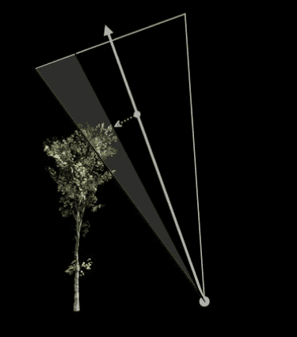
我们假设目标光源是球形光源。具体地，在 shading pass，我们希望对一个像素计算其是否被某个光源遮蔽，得到遮蔽值 \(V \in \lbrack 0,1\rbrack\) 与最终像素颜色相乘。
我们从该像素出发做 sphere tracing：向光源发射光线，从起点开始，不断采样射线上的 SDF 值 \(d\)，并根据 \(\max(|d|,\varepsilon)\) 步进光线。可见，在与几何体较近的位置，SDF 的值较小，sphere 的半径较小。
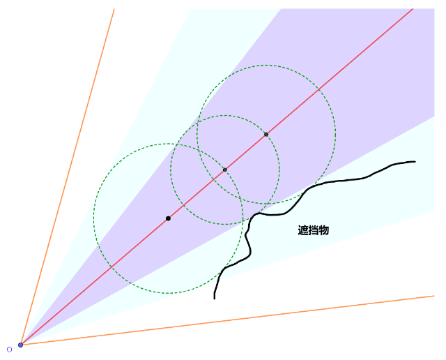
直到射线超过光源位置或抵达一个很远的地方，我们可以结束 ray marching。最终，我们统计得到一个最小 SDF 值 \(d\) 和该半径 \(d\) 对应的射线参数 \(t \in \left\lbrack t_{\min},t_{\max} \right\rbrack\)：若 \(d < 0\)，则该像素完全被遮蔽，\(V = 0\)，否则
\[ V = \max(\frac{d}{t \cdot \tan\alpha},1) \]
其中 \(\alpha\) 为球形光源投射张角的一半，为像素-光源中心连线到像素-光源边缘连线的张角。这里这个参数可供艺术家修改以调整半影面积的大小。
上述 \(V\) 的公式过于简单，也不够物理，在一些尖锐几何表面容易出现 artifact。有许多关于 \(V\) 的计算的改进，比如
- GDC 2018: GPU based clay simulation and ray tracing tech in Claybook
- UE4/5 SDF 阴影的实现
引擎内部已经参考 UE 进行了改进，限于篇幅，这里不再赘述。
DFAO
距离场环境光遮蔽（Distance Field Ambient Occlusion, DFAO）也是一个基于 ray marching 的 occlusion 计算技术。UE 的 DFAO 使用多个圆锥来采样遮蔽值，最终对各个圆锥的采样结果做加权平均即可获得片段的遮蔽值。
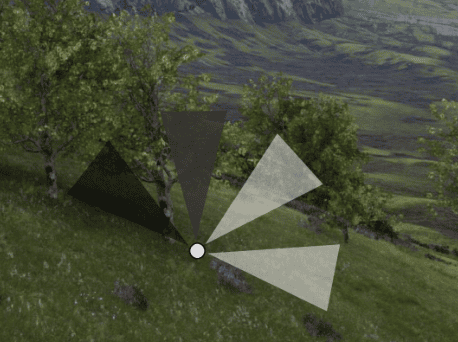
大体思路如下：
- 在像素所在的表面正半球方向，随机采样 \(n\) 个圆锥，每个圆锥的张角为 \(2\alpha\)
- 对每个圆锥：对第 \(i\) 个圆锥进行 sphere tracing，统计最小 SDF 值 \(d_{i}\) 和 \(d_{i}\) 对应的射线参数 \(t_{i} \in \left\lbrack t_{i,\min},t_{i,\max} \right\rbrack\)
- 计算遮蔽值 \[ V_{i} = \text{ saturate}\left( \frac{d_{i}}{t_{i} \cdot \tan\alpha} \right). \]
- 加权平均 \(V = \sum_{i = 1}^{n}k_{i}V_{i}\)，获得最终遮蔽值
UE 对 DFAO 还进行了被称为 sphere AO 的改进，即在每个模型本体的基础上再建立一个球体计算其 AO，将该 AO 与模型 SDF 计算的 DFAO 加权平均混合起来，达到更好的 AO 视觉效果。
SDF 碰撞检测与处理
- 质点碰撞检测的一般方法：检测其位置 \(\mathbf{x}\) 是否满足 \(\varphi(\mathbf{x}) \geq 0\)，若否，则意味着该质点位于物体内部，需进行碰撞处理。
- 质点碰撞处理的一般方法：将其沿 \(\nabla\varphi(\mathbf{x})\) 的方向，移动到物体外，并按需计算库仑摩擦；或者将其沿 \(\nabla\varphi(\mathbf{x})\) 的方向施加惩罚力。
一般地，刚体-刚体碰撞检测和软体-刚体碰撞检测可直接应用 SDF，适用于离散碰撞检测。只有解析的，时间连续的 SDF 可以较方便地应用于连续碰撞检测。
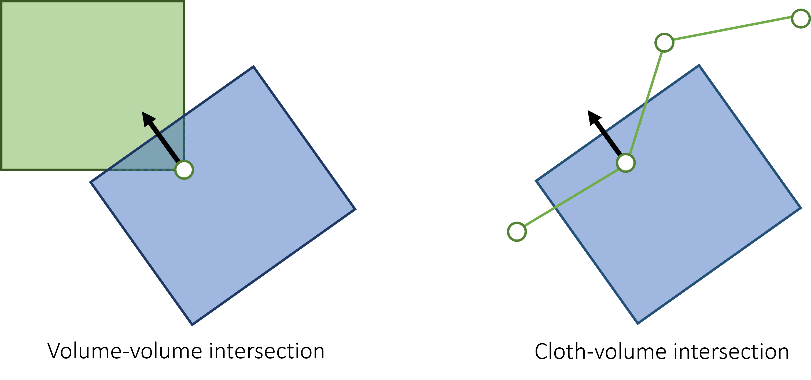
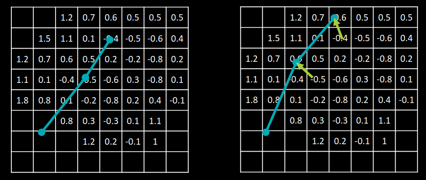
其他应用
SDF 还在许多领域得到了广泛应用，如：
- 描边与抗锯齿。事先为图像中的边缘烘焙 DF 后，可在渲染时线性插值边缘附近的像素，获取柔和而不失真的效果。可用于 (S)DF 字体和二维图形渲染，以及卡通渲染描边。
- SDF 图形插值4。将两张灰度图形明确边界后，可建立 SDF "等高线"后获得两者之间的过渡图形。可用于卡通渲染角色阴影贴图。
- 程序化建模。使用解析的 SDF 进行程序化建模和布尔运算，在运行时生成简单或复杂的几何体。
- Gameplay效果。例如，在潜入类游戏中，角色贴近掩体时，计算角色模型各点上 SDF 的值，值小则给予该部分模型较高的透明度，实现"隐身"效果。
- AI 优化。例如，将 SDF 作为损失函数的一部分，引导机器人 AI 运动轨迹规划算法生成安全路径。
限于篇幅，本讲不再赘述。